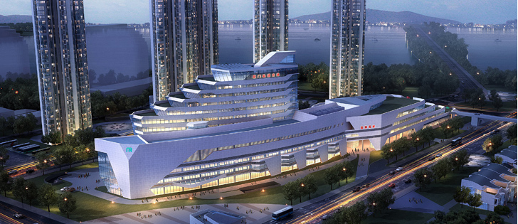

公司介绍

厦门轨道交通集团有限公司成立于2011年11月，注册资金为50亿元，是厦门市政府国有资产监督管理委员会履行出资人职责 的国有独资有限责任公司，是经厦门市政府授权国有资产投资的资产经营一体化公司。公司经营范围为：承担轨道交通的投资、融 资、开发建设、运营、维护和经营管理工作；从事轨道交通沿线土地综合开发、建设与经营管理工作；从事轨道交通沿线土地使用 权收购、储备与出（转）让工作；从事轨道交通沿线房地产及相配套的综合开发和经营管理工作；从事轨道交通的招标、咨询及技 术服务等工作；从事轨道交通沿线及周边广告、通讯、停车场等附属资源的开发建设和经营管理工作。
厦门轨道交通集团有限公司将本着“勇于承担，永无止境”的企业精神，秉承“创业、创新、创优”的工作理念，以人为本、 积极作为、主动作为，努力把轨道交通集团建设成为一个学习型、创新型和安全管控型企业。通过不懈的努力，将厦门轨道建设成 为“国内第一，世界一流”的项目，并致力于打造一流的轨道服务品牌，使厦门轨道成为一个实事工程、民生工程和惠民工程，为 建设创新、宜居、平安、文明和幸福厦门而不懈努力。